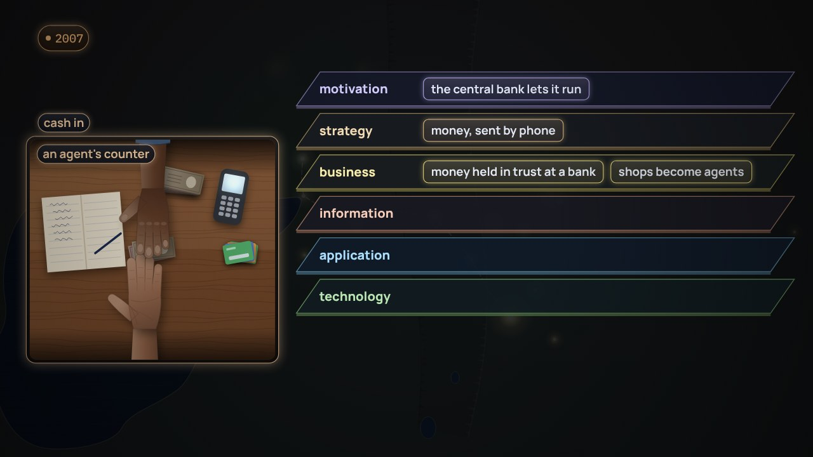

← Anterior · Película 7 de 11
Hoy, y hacia dónde va
Una calle imaginada en 2045. Los 140 sistemas de hoy en el mapa. Un objetivo, y el camino hacia él, con sus razones.
Temas › Arquitectura empresarial › El mapa antes de los datos
Kerala, 1997: cada capitán tiene que elegir un mercado todavía en el mar, sin saber cuánto pagará, y una pesca vuelve al mar mientras los compradores cercanos se quedan sin pescado, hasta que los celulares traen la respuesta a tiempo. Luego, la lista de 42 pedidos de Tomás, leída otra vez con la prueba del capitán: ¿quién va a decidir qué con la respuesta, y cuándo? La mitad llega a una meta, y la otra mitad, a nada. Desde las metas hacia abajo, cada decisión necesita una pregunta, y cada pregunta, una medida, definida una sola vez, con un hogar en el mapa y un responsable.
La película está en inglés, con subtítulos en español. Esta página, los capítulos y las preguntas están en español.
Amplía Hoy, y hacia dónde va
Presiona Reproducir, o salta a un capítulo. Activa Pausa para pensar y la película se detiene con una pregunta al final de los capítulos.

Descargar el video (en inglés)Archivos de subtítulosLeer el guion (en inglés)
¿Y ahora?
Las tres preguntas de Pausa para pensar, para una clase o un equipo. Abre una para ver la respuesta.
Película 8 de 11.
← Anterior · Película 7 de 11
Una calle imaginada en 2045. Los 140 sistemas de hoy en el mapa. Un objetivo, y el camino hacia él, con sus razones.

Siguiente · Película 9 de 11 →
M-Pesa en Kenia, 2007. Una tarifa social para todo hogar elegible. Un cambio, recorrido capa por capa hasta sus responsables, reglas y contratos.